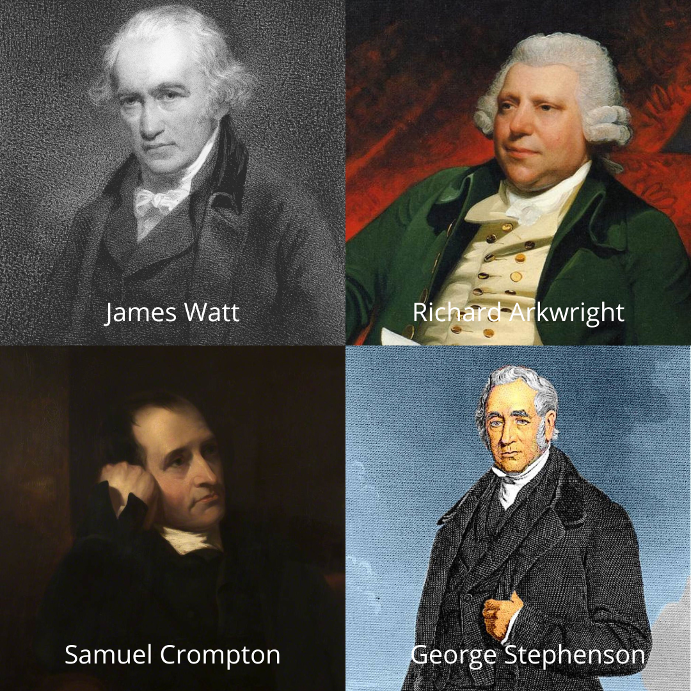
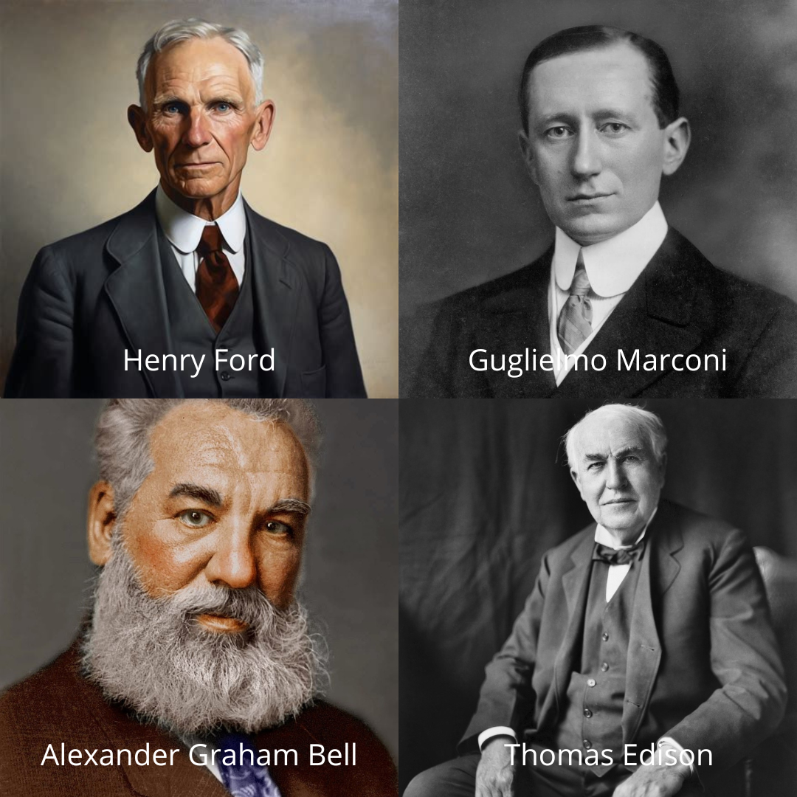
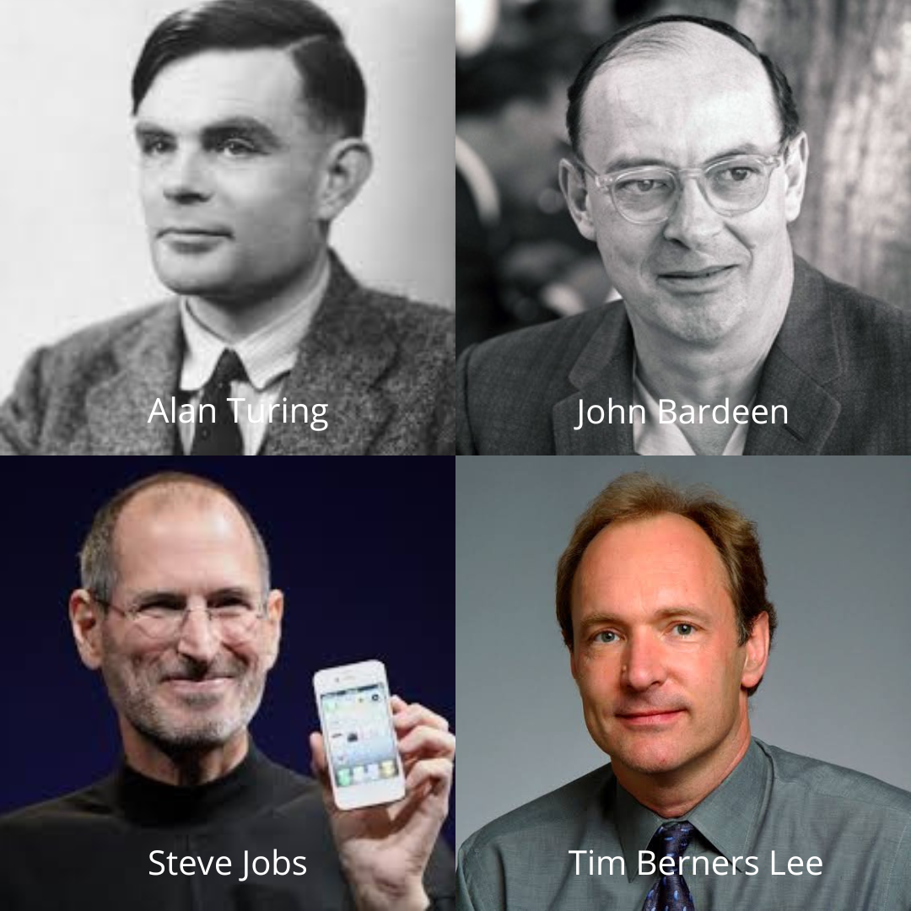

Revolusi Industri 1.0
1760 - 1840Revolusi Industri 1.0 dimulai di Inggris sekitar tahun 1760-an dan berlangsung hingga awal 1800-an. Revolusi ini ditandai dengan peralihan dari produksi berbasis tenaga manusia dan hewan ke produksi menggunakan mesin bertenaga uap dan air.
Perkembangan Utama:
- Mesin Uap (James Watt) → Menggerakkan pabrik dan transportasi.
- Industri Tekstil (Richard Arkwright, Samuel Crompton) → Meningkatkan produksi kain dengan mesin tenun dan pemintalan otomatis.
- Transportasi Kereta Api (George Stephenson) → Mempermudah distribusi barang dan mobilitas manusia.
- Pabrik dan Produksi Massal → Munculnya sistem kerja berbasis mesin di pabrik.

Revolusi ini mengubah ekonomi dari agraris ke industri, meningkatkan produksi barang secara besar-besaran, dan mempercepat urbanisasi.
Source: Revolusi_Industri - wikipedia
Revolusi Industri 2.0
1870 - 1914Revolusi Industri 2.0 merupakan kelanjutan dari Revolusi Industri 1.0, yang ditandai dengan perkembangan pesat dalam teknologi produksi, listrik, dan sistem manufaktur. Revolusi ini membawa perubahan besar dalam industri dan kehidupan sosial masyarakat.
Inovasi utama dalam periode ini:
- Listrik → menggantikan tenaga uap, memungkinkan pabrik beroperasi lebih efisien.
- Jalur perakitan (Henry Ford) → meningkatkan produksi industri, khususnya otomotif.
- Telepon (Alexander Graham Bell) dan Radio (Guglielmo Marconi) → berkembangnya cara untuk berkomunikasi.
- Transportasi → semakin maju dengan inovasi kereta listrik dan mobil bermesin bensin.
- Lampu Pijar (Thomas Edison) → menemukan lampu pijar dan mendirikan general electric.

Revolusi ini membawa perubahan besar dalam dunia kerja dan kehidupan sehari-hari, mempercepat urbanisasi dan memperkenalkan konsep produksi skala besar.
Source: Revolusi_Industri - wikipedia
Revolusi Industri 3.0
1950 - 2000Revolusi Industri 3.0, atau disebut juga Revolusi Digital, merupakan peralihan dari produksi berbasis mekanis dan listrik ke produksi yang menggunakan teknologi digital dan otomatisasi. Revolusi ini membawa dampak besar dalam berbagai sektor industri, komunikasi, dan kehidupan manusia.
Perkembangan dan inovasi utama:
- Alan Turing → Pelopor ilmu komputer dan kecerdasan buatan (AI), menciptakan konsep "Mesin Turing" yang menjadi dasar komputer modern.
- John Bardeen → Salah satu yang menemukan transistor, komponen utama dalam perangkat elektronik modern.
- Steve Jobs → Mempopulerkan komputer pribadi (PC) dan smartphone dengan peluncuran iPhone.
- Tim Berners Lee → Menciptakan World Wide Web (WWW) pada tahun 1989, yang menjadi dasar internet modern.

Revolusi Industri 3.0 membawa dunia ke era digital, komputerisasi, dan internet, membentuk teknologi modern yang kita gunakan saat ini.
Source: Revolusi_Industri - wikipedia
Revolusi Industri 4.0
2000 - SekarangRevolusi Industri 4.0 adalah era otomatisasi cerdas yang ditandai dengan perkembangan kecerdasan buatan (AI), Internet of Things (IoT), Big Data, komputasi awan, dan robotika. Teknologi ini menghubungkan dunia fisik dan digital untuk meningkatkan efisiensi industri.
Inovasi dan Penemuan utama:
- Klaus Schwab → Pencetus istilah Revolusi Industri 4.0 dalam bukunya tahun 2016.
- Elon Musk → AI, otomasi, dan kendaraan listrik (Tesla, SpaceX).
- Jeff Bezos → AI & robotika dalam e-commerce (Amazon).
- Sundar Pichai → Pengembangan AI & cloud computing (Google).

Revolusi Industri 4.0 membawa dunia ke era digital yang serba otomatis, cerdas, dan terhubung.
Source: Revolusi_Industri - wikipedia